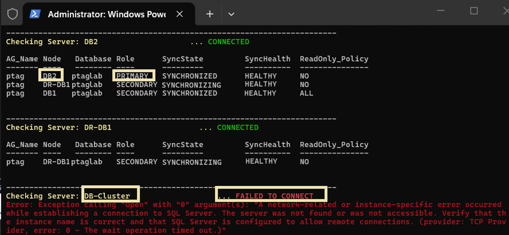

* Monitor using Pshell lightweight---------




# Define your server IPs, specific port, credentials, and query
$Servers = @(
    @{ Name = "DB1";        Address = "192.168.1.2,1433" }
    @{ Name = "DB2";        Address = "192.168.1.3,1433" }
    @{ Name = "DR-DB1";     Address = "172.30.1.4,1433" }
    @{ Name = "DB-Cluster"; Address = "192.168.1.5,1433" }
)
$Username = "anurag_dba"
$Password = "password"
$Query = "EXEC master.[dbo].[sp_AG_SyncStatus];"

# Infinite monitoring loop
while ($true) {
    Clear-Host
    Write-Host "=== Availability Group Sync Status Monitor (Press Ctrl+C to Exit) ===" -ForegroundColor Cyan
    Write-Host "Timestamp: $(Get-Date -Format 'yyyy-MM-dd HH:mm:ss')" -ForegroundColor Gray
    Write-Host "------------------------------------------------------------------------"

    foreach ($Server in $Servers) {
        $ServerName = $Server.Name
        $TargetIP   = $Server.Address

        Write-Host "Checking Server: $ServerName ($TargetIP)... " -NoNewline -ForegroundColor Yellow
        
        # Build connection string enforcing the explicit IP address and port 1433
        $ConnectionString = "Server=$TargetIP;Database=master;User ID=$Username;Password=$Password;Connection Timeout=3;TrustServerCertificate=True;"
        $Connection = New-Object System.Data.SqlClient.SqlConnection($ConnectionString)
        $Command = New-Object System.Data.SqlClient.SqlCommand($Query, $Connection)
        
        try {
            $Connection.Open()
            
            # Fetch data and load it into a clean layout
            $Reader = $Command.ExecuteReader()
            $DataTable = New-Object System.Data.DataTable
            $DataTable.Load($Reader)
            $Connection.Close()

            # Output the data to the console window if rows exist
            if ($DataTable.Rows.Count -gt 0) {
                Write-Host "CONNECTED" -ForegroundColor Green
                $DataTable | Format-Table -AutoSize
            } else {
                Write-Host "CONNECTED (No active synchronization data returned)" -ForegroundColor Yellow
            }
        }
        catch {
            # Instantly catch failures or connection timeouts and skip to the next server
            Write-Host "FAILED TO CONNECT" -ForegroundColor Red
            Write-Host "Error details: $_" -ForegroundColor DarkRed
        }
        finally {
            # Clean up network resources safely
            if ($Connection.State -eq [System.Data.ConnectionState]::Open) {
                $Connection.Close()
            }
        }
        Write-Host "------------------------------------------------------------------------"
    }

    # Rest interval before starting the next check cycle
    Start-Sleep -Seconds 10
}
